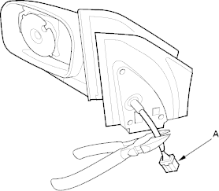
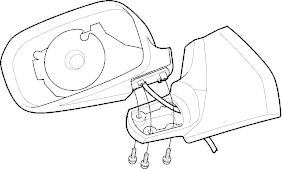
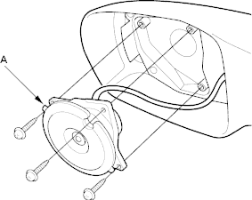
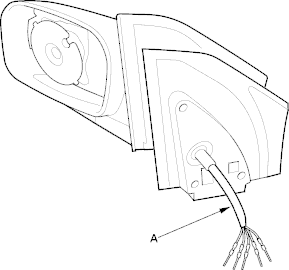

- Remove the mirror holder and disconnect the mirror defogger connectors*, refer to the '01 Civic Shop Manual on this CD, P/N 62S5A00 (see page 20-35).
*: With defogger - Remove the power mirror, refer to the '01 Civic Shop Manual on this CD, P/N 62S5A00 (see page 20-170).
- Disconnect the 6P connector (A) from the mirror and record the terminal locations and wire colours.

- Cut the wire harness with wire cutters, and remove the gasket.
- Remove the three screws from under the mirror.

- Remove the three Torx screws using a Torx T10 bit, then remove the actuator (A).

Installation:
- Route the wire harness (A) of the new actuator through the hole in the bracket.
